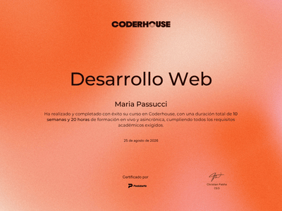
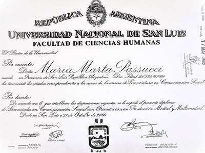
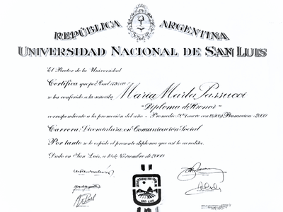

Recientemente obtuve mi certificado de desarrollo web en la plataforma CoderHouse, con una puntuación de 97%

En el año 2009 obtuve mi titulación de Licenciada en Comunicación, expedida por la Facultad de Ciencias Humanas de la Universidad Nacional de San Luis.

Gracias a mi esfuerzo y mis deseos de ser una profesional excepcional, obtuve asimismo un Diploma de Honor por mi calificación final de 9.25 de la Licenciatura en Comunicación Social.